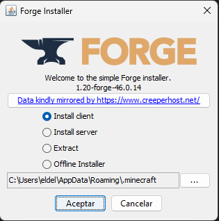
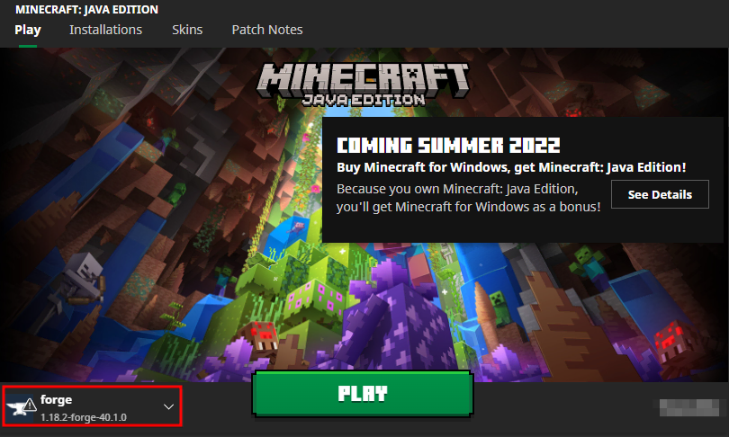
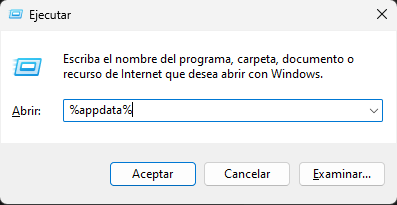

En esta web, tendrás toda la información necesaria para poder jugar en JW-Craft
| 1. En primer lugar, descarga el archivo adjunto: | Descargar Forge |
| 2. Abre el archivo descargado, pulsa en "Install client" y acto seguido, en OK. |  |
| 3. Esperamos a que se descargue. Cuando termine, entra al Minecraft Launcher y tendrás una instalación llamada "forge 1.20". La seleccionas y puedes entrar a Minecraft. |  |
| 1. Descarga el archivo conjunto: | Descargar Mod Xaeros Minimap |
| 2. Busca el archivo descargado, haz click derecho y selecciona "Cortar". | |
| 3. Presiona la combinación de teclas Windows + R, escribe "%appdata%" y presiona Enter. |  |
| 4. Se abrirá el Explorador de archivos. Busca la carpeta ".minecraft" y dentro de ella, la carpeta "mods". | |
| 5. Pega el archivo cortado anteriormente en la carpeta "mods". | |
| 6. Cierra el Explorador de archivos y abre Minecraft Launcher. | |
| 7. Selecciona la instalación de Forge, entra al juego y tendrás el mod instalado y habilitado. |
| 1. Pulsamos en Multijugador. | |
| 2. Ahora, clicamos en Añadir servidor. | |
| 3. Nombre de servidor: Aquí podemos ponerle el nombre que queramos al servidor. | |
| 4. IP: 108.181.122.18:25604 |